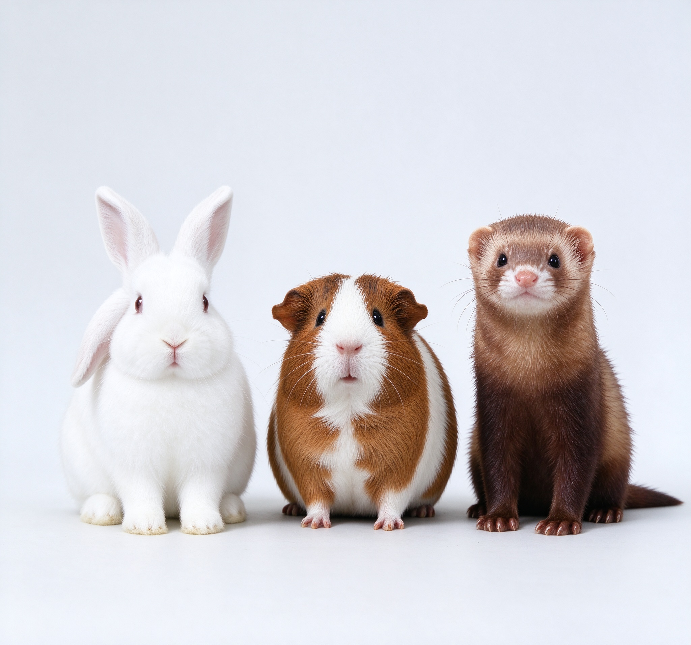
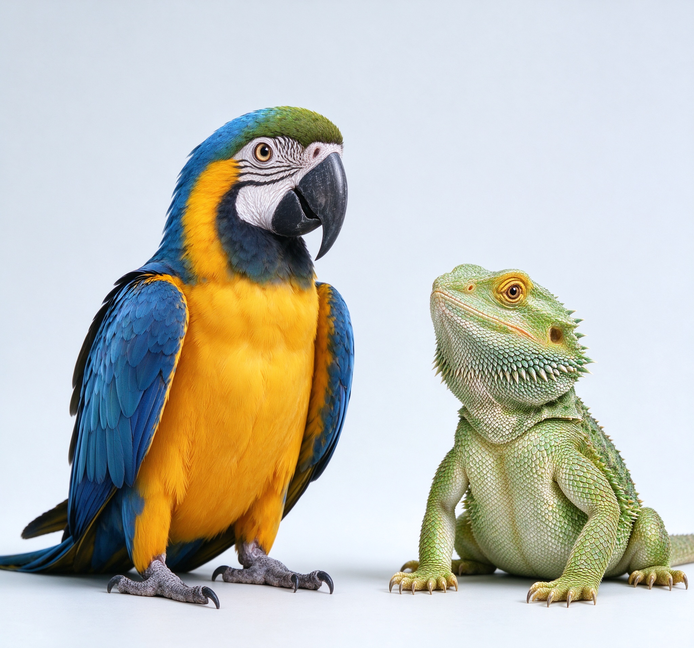
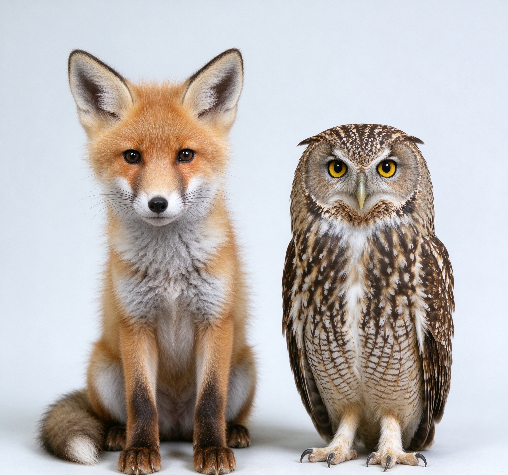

What We Do
Expert insight. Better-informed decisions.
Subspecialty interpretation of radiographs, CT and MRI studies for companion and exotic species.
X-Ray · CT · MRI · Teleradiology
Remote interpretation of radiographs, CT and MRI studies for veterinary practice, delivered to a consistent, structured reporting standard.
10+ yrs
Clinical experience focused on CT & MRI interpretation
35,000+
Imaging cases interpreted across multiple modalities
8,000+
Exotic pet cases — a specialty few practices cover in-house
<48h
Standard turnaround, with urgent priority cases available



Submit a study in a few clicks and receive a structured, specialist-written report.